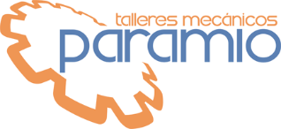

Vista auditable del núcleo · familia → procedimiento → patrón → incertidumbre → decisión
Esta pantalla no sustituye los motores. Lee el catálogo real de familias y normas del núcleo metrológico y lo presenta de forma trazable. Los avisos señalan incoherencias o documentación pendiente; no cambian fórmulas ni decisiones.
Pulsa una fila para ver el detalle. Los datos proceden del núcleo actual, no de una tabla decorativa.
| Familia | Procedimiento | Motor / método | Patrones | Decisión | Estado |
|---|---|---|---|---|---|
| Cargando núcleo metrológico… | |||||
Prioriza lo que puede afectar a trazabilidad, procedimiento o auditoría.
Comparando catálogos y reglas activas.
Separa la decisión de auditoría de la salida operativa para el operario.
El resultado cumple la regla de decisión aplicable.
Un punto o función incumple los límites definidos.
Se conserva en el motor para trazabilidad cuando la incertidumbre solapa el límite.
El operario recibe APTO / NO APTO / NO EVALUABLE; la decisión manual no sustituye al motor.
Muestra qué dominios están documentados y cuáles siguen declarados como pendientes en el código.
La aptitud metrológica del equipo y su adecuación a la tolerancia de producto son decisiones relacionadas pero distintas. Las reglas 4:1 / 10:1 pueden utilizarse como criterio de capacidad de uso cuando el procedimiento correspondiente así lo establezca; no sustituyen a la regla de decisión de calibración.
Las normas, patrones, puntos, repeticiones, incertidumbre y regla de decisión deben poder rastrearse hasta el motor/procedimiento vigente. Esta pantalla solo los expone: los cambios normativos deben hacerse en el núcleo versionado.